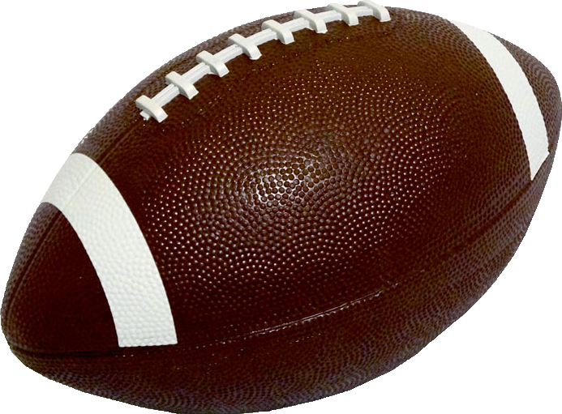

AMERICAN FOOTBALL
Football History
American football is the most popular sport in the United States in terms of broadcast viewership audience. The most popular forms of the game are professional and college football, with the other major levels being high-school and youth football.
As of 2012, nearly 1.1 million high-school athletes and 70,000 college athletes play the sport in the United States annually. The National Football League, the most popular American professional football league, has the highest average attendance of any professional sports league in the world.
Its championship game, the Super Bowl, ranks among the most-watched club sporting events in the world. The league has an annual revenue of around US$15 billion, making it the most valuable sports league in the world. Other professional leagues exist worldwide, but the sport does not have the international popularity of other American sports like baseball or basketball.